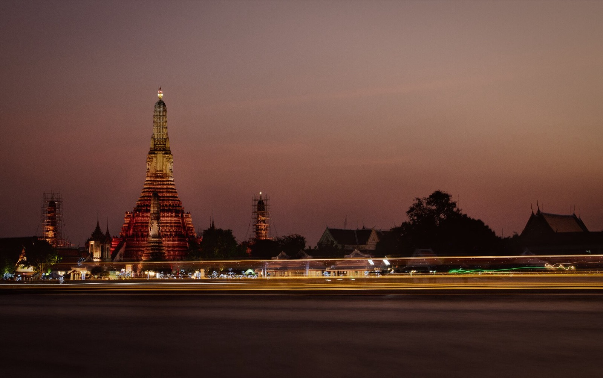
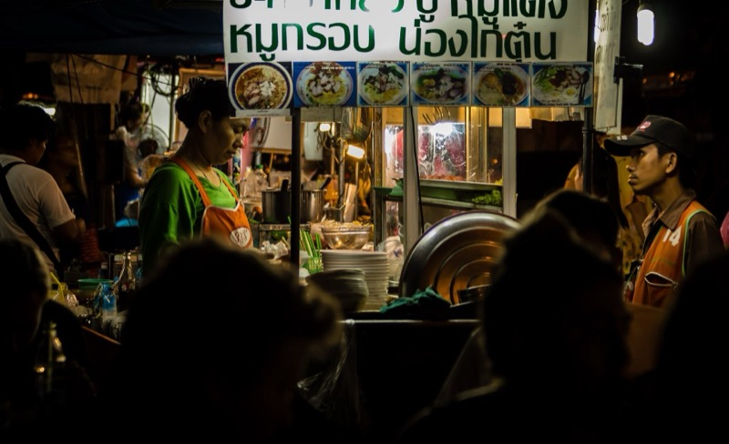
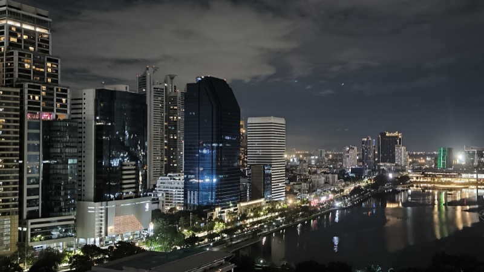
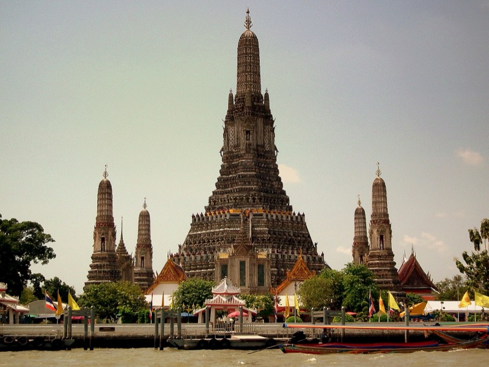
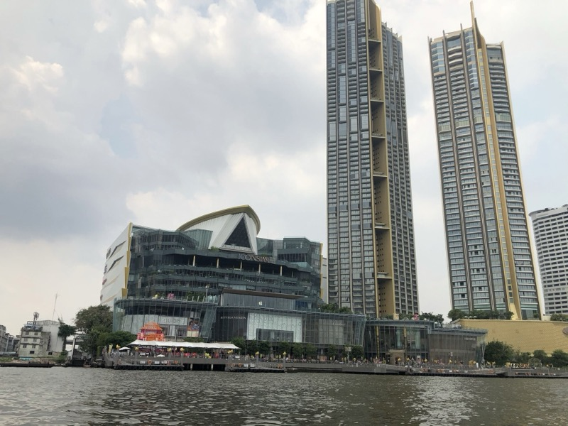
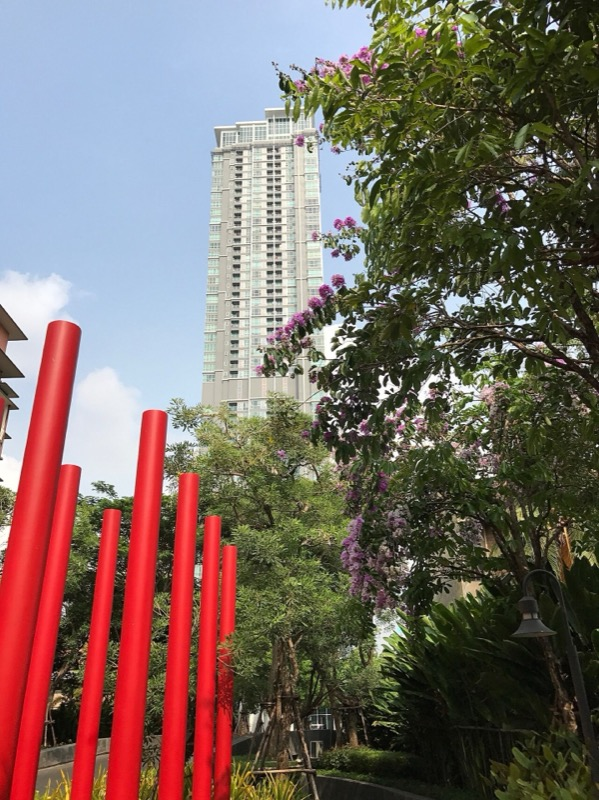

2026 年 9 月 24 日到 28 日
曼谷，五天，兩個人
從落地 10:50 到起飛 19:10，每個時段都排好，每個地方都講清楚，同一個時段給你們幾個選項自己挑。


9/24 週四 / 抵達
從 Ekkamai 一路往西吃回飯店
10:50 落地，13:00 開始。Phed Mark、Mae Varee、Rung Rueang、CentralWorld、朱拉夜市四攤，夜生活四選一。

9/25 週五 / Safari World
她逛動物園，晚上 Thonglor 會合
Safari World 全天。動物園之後三種晚餐路線，夜生活以 Tichuca 為主。

9/26 週六 / 老城與泰拳
大皇宮到長尾船，日落在 Chom Arun，晚上 Rajadamnern
十二個點全排進去，Chom Arun 一定在泰拳前。

9/27 週日 / 文藝與河
Song Wat、ICONSIAM，夜船或 Nobu
自由日。下午兩條路線，晚餐三選一，世界級酒吧四選一。

9/28 週一 / 離境
Ari 最後一個早上，15:00 出發
半天，全部在飯店一站範圍內。19:10 起飛。
其他頁面夜生活、圖鑑、資訊
夜生活四個晚上的定位與有名號的酒吧名單圖鑑你點名的每個商場、街區、餐廳的完整說明資訊交通、現在就要訂的、服裝規定、錢、緊急時間框架以實際航班回推
抵達9/24 10:50 降落，入境加提行李抓 70-90 分，12:00 出關，機場快線 26-30 分到 Phaya Thai 與飯店同棟。行程 13:00 開始。
離開9/28 19:10 起飛，16:00 前到機場，15:00 從飯店出發。9/28 有效行程到 14:30。
硬性錨點9/25 Safari World 09:00-17:00（她）。9/26 Rajadamnern 泰拳 19:00-22:00（已訂）。9/26 Chom Arun 21:30 關門，必排泰拳前。